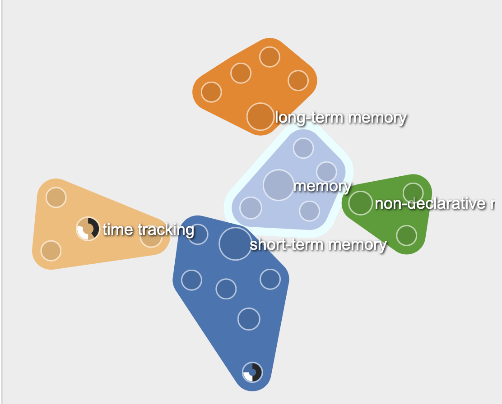
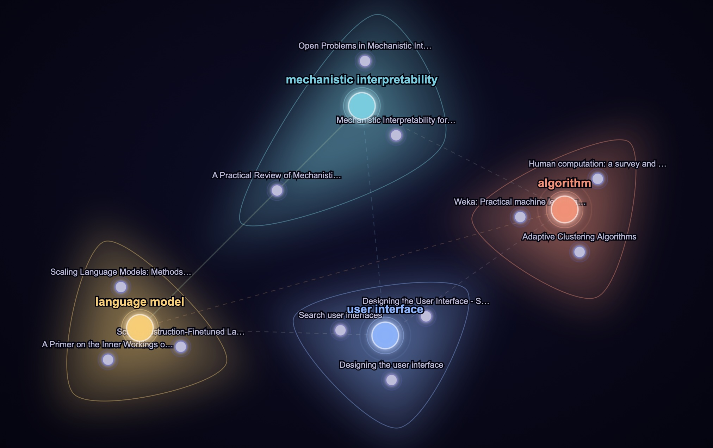

Knowledge Graph
Dialog
Education
Visual Dialog
An LLM quiz bot wired to a D3.js concept map — as the bot discusses psychology, it highlights the relevant nodes in the graph in real time.

RAG
Embeddings
LLM
Visual RAG
Interactive retrieval-augmented generation with a live 2D embedding space explorer. Watch your query land on the semantic map and trace how answers emerge.

VIBE
POI
LLM
VIBE BibTeX Library
1,000+ papers on a draggable POI canvas. Drag a concept to pull the corpus around it — the LLM narrates what it finds in the semantic space.